핵심 병목을 하나로 좁힘
앱 이동과 맥락 재설명을 줄이기 위해 MVP를 “캡처 → AI 응답 → 현재 화면 확인” 흐름에 집중했습니다.
MODAC·THON 2026
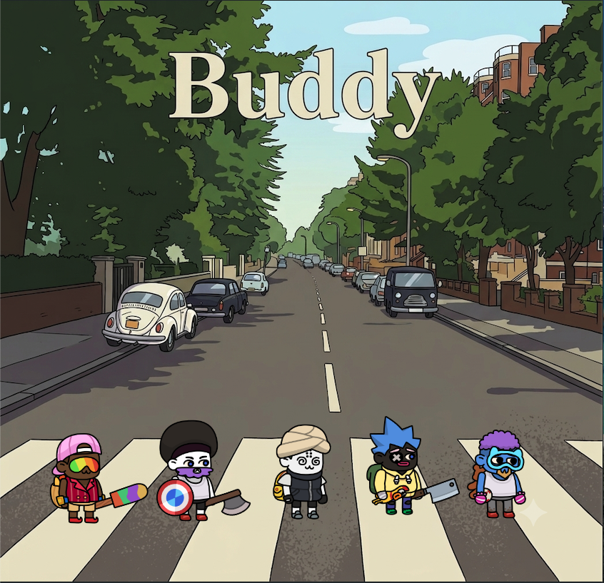
Presentation Flow
Problem Definition
여러 앱을 오가며 작업 흐름이 끊김
화면 맥락을 매번 다시 설명해야 함
딱딱한 문답보다 편한 상호작용이 필요
Project Message
Solution Concept
화면 한쪽에 머무르며 사용자의 흐름을 방해하지 않고 필요한 순간에 반응합니다.
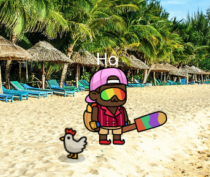
Capture → Understand → Reply
선택한 화면을 요약, 번역, 설명하거나 이미지에 대한 질문을 처리합니다.
Core Feature 1
선택 영역
반복되는 “캡처 → 이동 → 설명” 과정을 현재 화면 안에서 끝내는 것이 목표입니다.
Core Feature 2
핵심을 먼저 잡고 다음 행동을 제안합니다.
사용자의 의도와 감정을 고려해 부드럽게 답합니다.
러버덕처럼 정답보다 좋은 질문을 던집니다.
MBTI 기반 페르소나는 설명 가능한 축이 있어 빠르게 캐릭터 성향을 만들기 좋습니다.
캐릭터 외형, 투명도, 색상, 성장 요소는 사용자의 취향을 반영하는 확장 포인트입니다.
Expansion Feature
복사한 자료를 팀원과 빠르게 연결
이모지나 짧은 텍스트로 작업 맥락 공유
동료의 버디를 같은 작업 공간에 표시
Demo Plan
Demo Video
Implementation Flow
앱 이동과 맥락 재설명을 줄이기 위해 MVP를 “캡처 → AI 응답 → 현재 화면 확인” 흐름에 집중했습니다.
Unity는 화면 위 경험과 편집 UI를 맡고, FastAPI 서버는 AI Key, 모델 호출, 결과 저장을 담당했습니다.
모델 속도·품질 비교, MBTI 말투 평가, Runtime UI 표준화로 시연 안정성을 높였습니다.
Team Role Breakdown
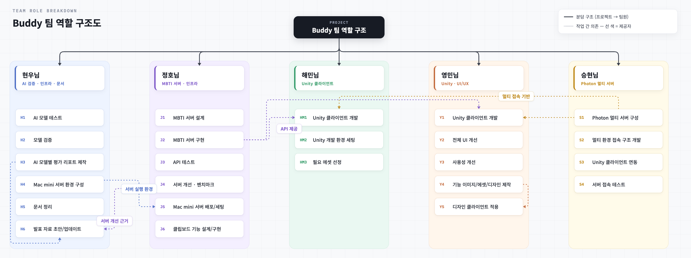
Unity Client Contribution
프로젝트 세팅, 데스크톱 Buddy, 캡처/주석, 무료 OCR/번역, /v2/analyze 서버 연동을 구현했습니다.
Photon 룸 접속, 원격 외형 동기화, 이모지 RPC, macOS 캡처/클립보드 포팅으로 함께 쓰는 Buddy를 만들었습니다.
미션, 레벨, 파츠 해금, 치트 패널, Runtime UI 표준화로 반복 사용과 커스터마이즈 흐름을 정리했습니다.
AI Token Usage
Claude/OpenAI API로 속도, 비용, 정확도를 비교하고 서버 응답 전략을 정리했습니다.
Claude API로 PersonaForge 말투 생성과 블라인드 평가 구조를 검증했습니다.
Claude Code로 UI 명세, 템플릿화, 반복 구현과 검증 흐름을 만들었습니다.
Unity 클라이언트 구현, 개발 환경 세팅, 기능 연결 과정에 Claude Code를 활용했습니다.
Photon 기반 멀티 접속 구조 개발과 Unity 연동 테스트에 Claude Code를 활용했습니다.
Model Evaluation
모델별 속도·비용·정확도와 MBTI 말투 재현을 비교해 기본 응답 전략을 정리했습니다.
GPT-5.4 mini: 빠르고 비용 효율적감정형 말투는 Claude Haiku가 더 자연스럽고, 분석형은 GPT-5.4 mini로도 충분했습니다.
F → Claude Haiku · T → GPT-5.4 mini실제 사용 범위는 Unity 클라이언트에서 안정적으로 처리하기 쉬운 단일 JSON 응답으로 정리했습니다.
Single JSON responseAI 서버는 화면 이해에 집중하고, 실제 편집 UI와 적용은 Unity 클라이언트가 담당합니다.
서버 이해 · Unity 편집PersonaForge Evaluation
예: INTP처럼 답변 생성
정답 MBTI를 숨긴 답변만 전달
다른 AI가 어떤 성격처럼 보이는지 판단
유형, 계열, 축별 점수로 개선 지점 확인
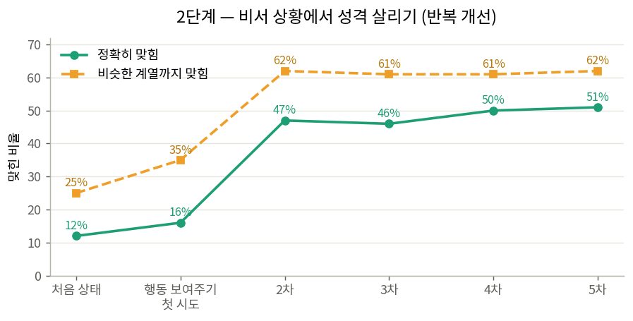
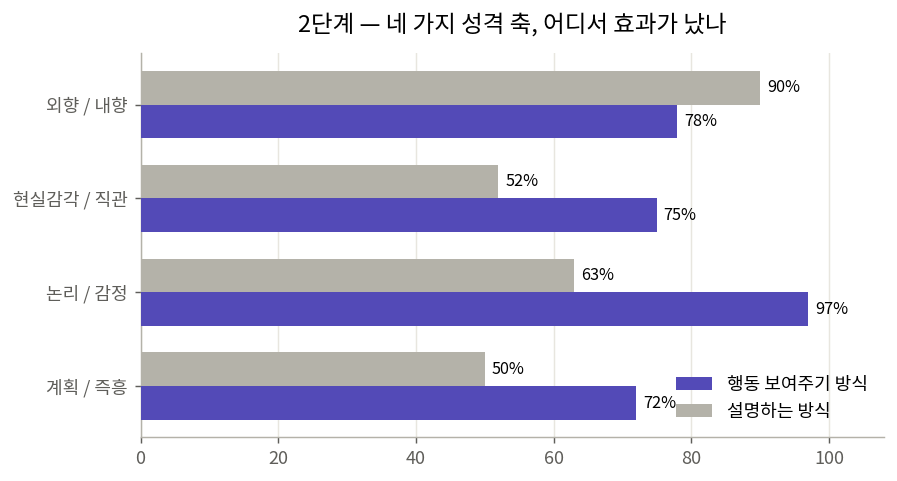
AI-Assisted Runtime UI
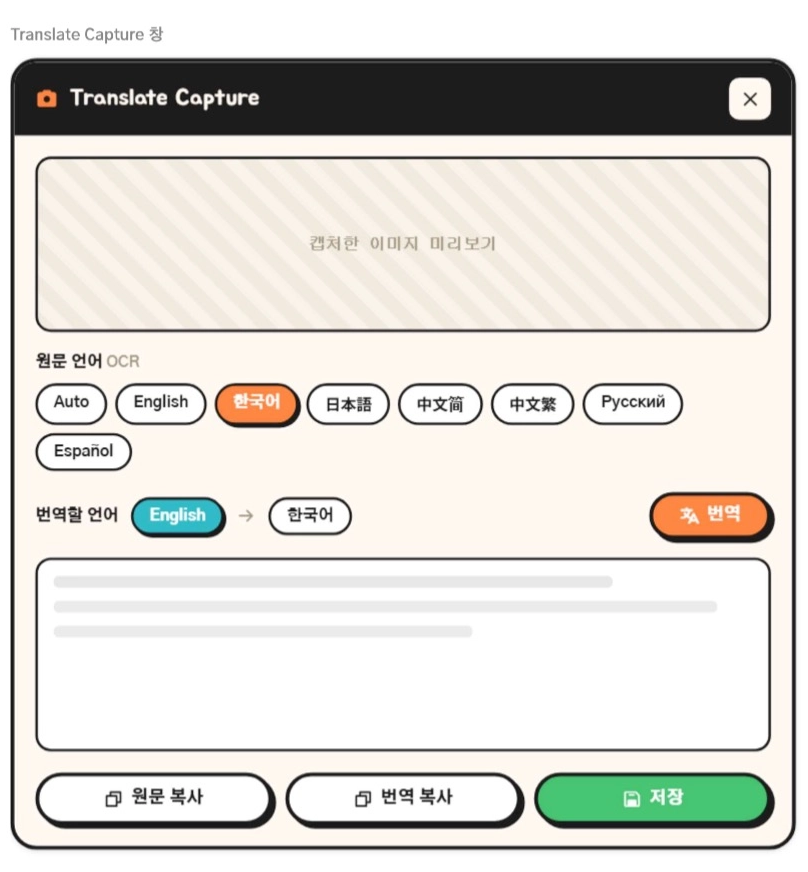
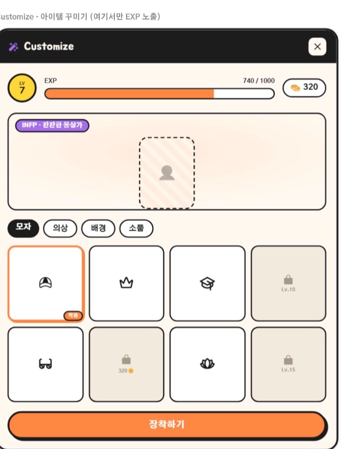
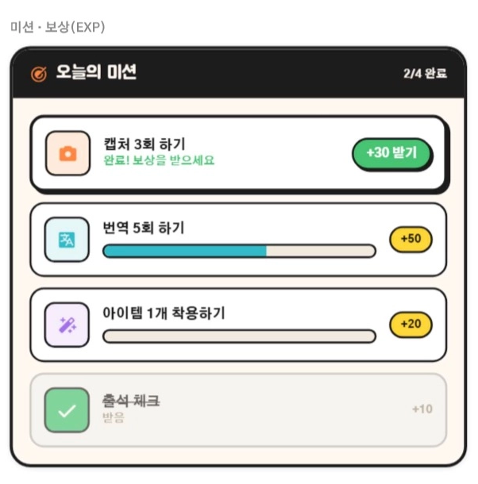
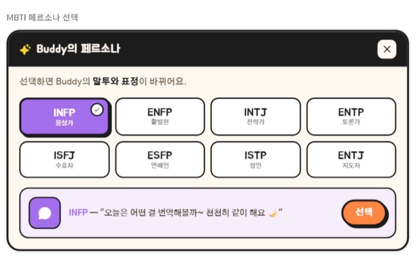
Canvas마다 버튼, 색상, 닫기 위치, Text/TMP 사용 방식이 달라 UI 톤이 흔들렸습니다.
AI에게 바로 코드를 맡기지 않고, 먼저 UI 명세를 만들고 Canvas 구현을 그 기준에 맞췄습니다.
스크린샷 피드백을 좌표·색상·규칙으로 바꾸고, git diff 검증과 audit 문서로 반복했습니다.
Panel, Button, Close, Animation, Window exclusivity를 공통 규칙으로 정리했습니다.
Future Direction
Buddy에서 이어주는 플로우를 안정적으로 보여주기.
스크롤 캡처, 클립보드 히스토리, 최근 기능 모아보기, 단축키 지원.
프로젝트별 공유 히스토리, 팀 초대/권한 관리, 작업 맥락 자동 요약.
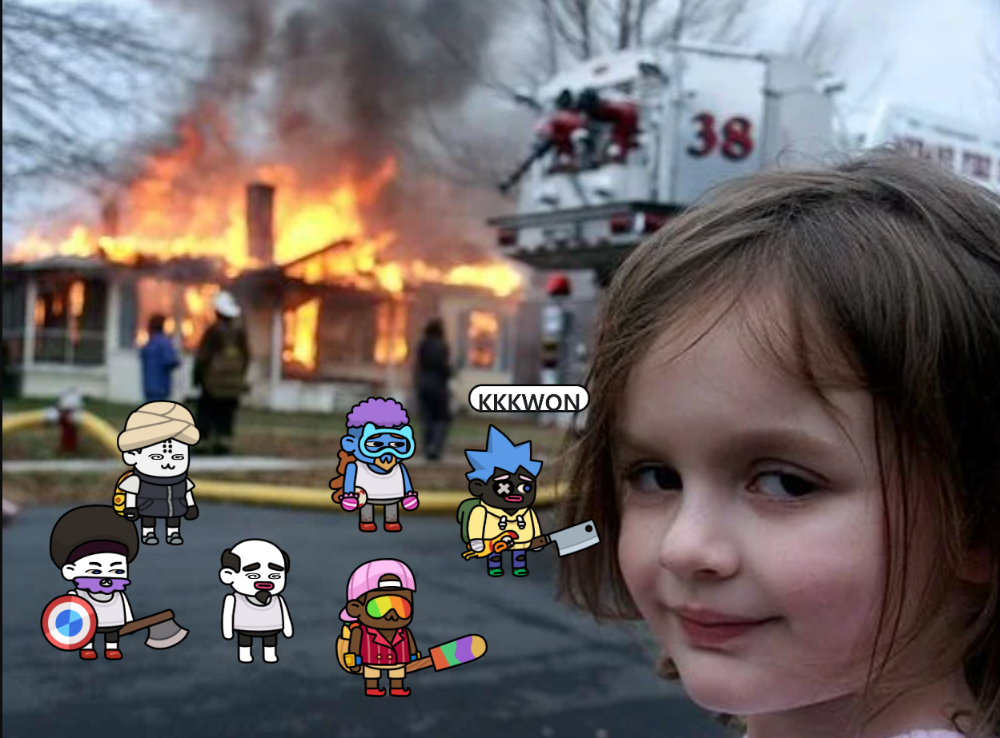
Thank You
Buddy 팀 발표를 들어주셔서 감사합니다.
Q&A Prep
초기 회의에서 “캡처 → AI 서비스 이동 → 프롬프트 작성”의 뎁스를 줄이는 문제로 수렴했습니다.
Unity는 화면 위 경험, Mac mini 서버는 API Key와 모델 라우팅, Photon은 멀티 표현을 맡았습니다.
모델별 속도·비용·정확도, MBTI 말투, Runtime UI 명세와 audit로 감이 아니라 리포트 기반으로 결정했습니다.
스크롤 캡처, 팀 클립보드, 성장/미션, 캐릭터 동기화는 회의와 Unity 작업 문서에 후속 확장으로 남겨두었습니다.
Expected Impact
사용자는 화면을 캡처하고, 다른 서비스로 이동한 뒤, 같은 맥락을 다시 설명해야 합니다.
Buddy는 선택한 화면을 바로 이해하고, 답변과 공유까지 작업하던 자리에서 이어갈 수 있게 합니다.
Team Composition
Design Direction
캡처한 화면을 AI가 이해하고 바로 응답하는 흐름을 MVP의 중심으로 둡니다.
해커톤 기간 안에 구현 가능하면서도 보는 즉시 제품 콘셉트가 이해되도록 만듭니다.
MBTI 페르소나와 캐릭터 커스터마이징으로 도구보다 동료에 가까운 느낌을 줍니다.
Buddy Service
Buddy는 작업 화면을 벗어나지 않고 필요한 도움을 받고, 그 맥락을 동료와 공유할 수 있게 돕는 데스크톱 AI 동료입니다.
Team Composition
프로젝트 방향을 정한 뒤, 각자의 강점으로 역할을 나눴습니다.
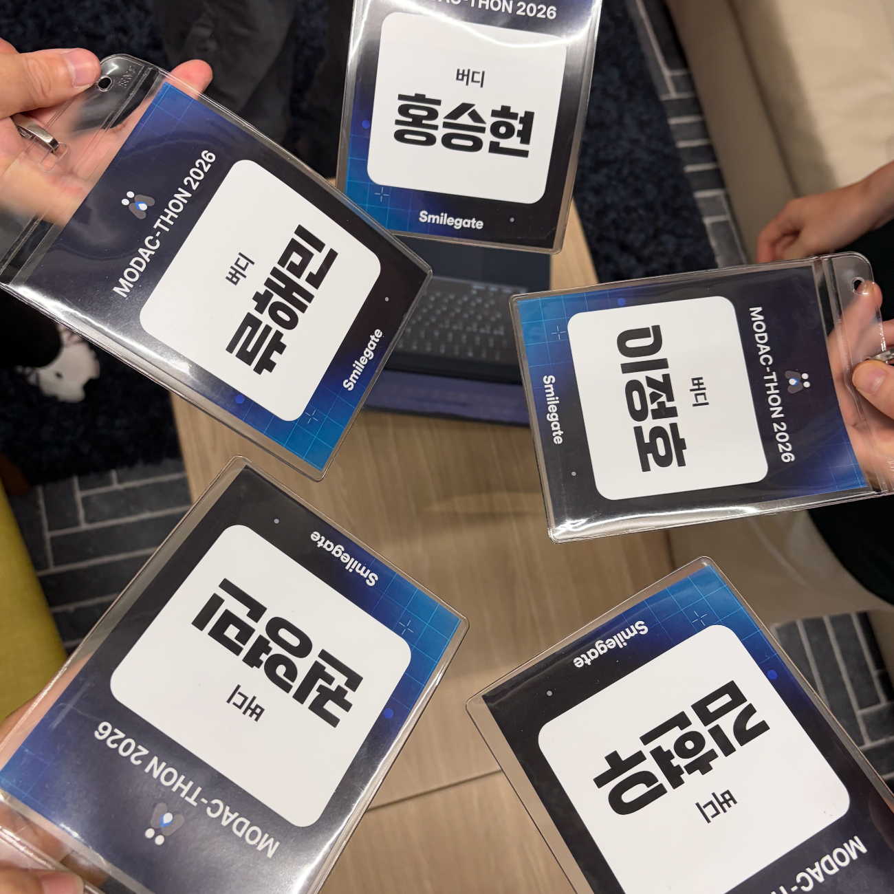
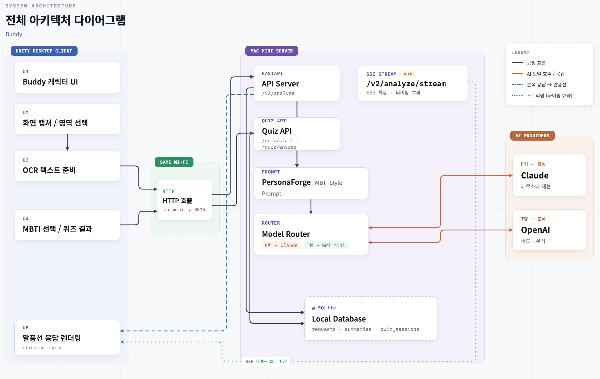
Technical Approach
Unity/C# 중심 검토
데스크톱 앱, 캐릭터, 화면 캡처, 에셋 활용Mac mini FastAPI 서버
Unity 요청 처리, 모델 라우팅, 결과 저장MBTI 질문셋과 결과 구조
초기 온보딩, 버디 성향, 말투 프롬프트Photon
멀티 접속, 클립보드, 플랫폼별 의존성 최소화Unity Client
투명 오버레이 창 위에 2D 캐릭터가 떠 있고, 필요한 순간 호버 메뉴로 기능을 엽니다.
화면 영역 선택, OCR/번역, AI 분석 결과 창까지 Unity 안에서 처리합니다.
캡처 이미지 주석, 캐릭터 커스터마이징, MBTI 말투, 이모지 표현을 클라이언트가 담당합니다.
Photon으로 닉네임, 외형, 이모지를 공유해 다른 사람의 Buddy도 같은 화면에 보여줍니다.
Eval Reports
8개 작업 셀 기준 GPT-5.4 mini가 모두 더 빨랐고, 정확도는 동급이었습니다.
API Design Decisions
Client Processing Flow
사용자가 전체 화면 또는 필요한 영역을 고릅니다.
Unity가 데스크톱 화면을 이미지로 준비합니다.
번역, 서버 분석, 이미지 주석 중 목적에 맞게 이어집니다.
OCR과 번역은 Tesseract와 무료 번역 경로로 처리해 빠르게 결과를 보여줍니다.
이미지와 persona를 Mac mini 서버의 /v2/analyze로 보내 AI 답변을 받습니다.
펜과 텍스트 주석은 클라이언트에서 적용하고 저장, 복사, 공유로 마무리합니다.
API Surface
캡처 이미지, OCR 텍스트, persona, mode를 보내 번역·설명·질문 응답을 JSON으로 받습니다.
MBTI Flow
사용자가 16개 MBTI 중 하나를 직접 고릅니다.
퀴즈를 풀면 결과 MBTI를 그대로 사용할 수 있습니다.
서버가 선택한 MBTI에 맞춰 응답 톤을 조정합니다.
정확한 설명이 더 중요하면 담백한 기본 응답으로 바꿉니다.
Q&A Prep
아이디어가 넓어질수록 MVP가 흐려졌고, 캡처 기반 AI라는 핵심 플로우로 다시 좁히는 과정이 필요했습니다.
Q&A Prep
기능만 제공하는 도구보다 현재 화면에 머무르는 버디가 더 낮은 진입 장벽과 친근한 상호작용을 만듭니다. 사용자는 별도 도구를 여는 대신 화면 옆의 캐릭터를 통해 도움을 받는 경험으로 받아들일 수 있습니다.
Q&A Prep
캡처와 AI 응답을 현재 화면 안에서 처리하고, 페르소나와 캐릭터를 통해 반복 사용 경험을 강화합니다. 핵심은 기능 수를 늘리는 것이 아니라 “캡처 → 이동 → 설명” 흐름을 현재 화면 안에서 줄이는 것입니다.
Q&A Prep
Claude/OpenAI 키는 Unity가 아니라 Mac mini 서버 환경변수로 관리하고, 사용자가 명시적으로 캡처한 화면만 전송합니다. 클라이언트에는 모델 키를 노출하지 않고, 서버에서 요청과 응답을 통제하는 구조입니다.
Q&A Prep
데스크톱 캐릭터와 비주얼, 에셋 활용에 강점이 있고 짧은 시간 안에 시각적 프로토타입을 만들기 좋았습니다. 화면 위에 머무르는 Buddy, 호버 메뉴, 캐릭터 커스터마이징 같은 경험을 빠르게 확인하기에 적합했습니다.
Q&A Prep
페르소나는 답변의 말투와 우선순위에만 반영하고, 사실성·정확성은 기본 응답 품질을 먼저 통과한 뒤 적용합니다. 품질이 흔들리면 기본 모드로 전환할 수 있게 설계했습니다.
Q&A Prep
짧은 해커톤 안에서 설명 가능한 성향 축이 필요했습니다. MBTI는 16개 유형과 말투 차이를 빠르게 만들 수 있고, 사용자가 직접 선택하거나 퀴즈로 진입하기 쉬워 초기 페르소나 실험에 적합했습니다.
Q&A Prep
번역처럼 반복적이고 즉시성이 중요한 작업은 Tesseract와 무료 번역 경로로 빠르게 처리하고, AI 서버는 이미지 이해·질문 응답처럼 판단이 필요한 작업에 집중시켰습니다. 비용과 지연시간을 줄이기 위한 분리입니다.
Q&A Prep
Unity 클라이언트에 Claude/OpenAI 키를 넣지 않고, 모델 라우팅과 로그 저장을 서버 한 곳에서 통제하기 위해서입니다. 클라이언트는 단일 JSON API만 호출하므로 시연과 디버깅도 단순해집니다.
Q&A Prep
긴 스크린샷이나 텍스트가 많은 이미지에서는 AI 편집이 글자를 깨뜨릴 수 있습니다. 그래서 서버는 화면 이해와 답변 생성에 집중하고, 펜·텍스트 주석·저장·복사는 Unity 클라이언트에서 직접 처리하도록 나눴습니다.
Q&A Prep
MVP의 핵심은 캡처 기반 AI입니다. 다만 Photon 멀티, 이모지, 외형 동기화는 Buddy가 개인 도구에서 팀 경험으로 확장될 수 있음을 보여주는 백업 근거로 준비했습니다.
Q&A Prep
코드 작성만 맡긴 것이 아니라 모델 평가, MBTI 말투 검증, Unity Runtime UI 명세화, 스크린샷 기반 레이아웃 반복 개선에 사용했습니다. 특히 UI는 명세 → 구현 → 검증 → audit 흐름으로 통제했습니다.
Q&A Prep
핵심 흐름을 “영역 선택 → 캡처 이미지 준비 → 로컬 OCR/번역 또는 서버 분석 → Unity 결과 표시”로 분해해 설명할 수 있습니다. 데모 치트와 저장된 결과 화면은 발표 중 같은 상태를 빠르게 재현하기 위한 장치입니다.
Q&A Prep
시연 안정성, OCR/이미지 이해 품질, 캡처 후 액션 선택 UX를 우선 개선합니다.
Archive
닉네임과 Mac mini 서버 연결 확인
MBTI 선택 또는 퀴즈
기본 캐릭터와 커스터마이징
전체 또는 영역 선택
번역, 설명, 질문, 편집 보조
결과를 현재 화면에서 확인